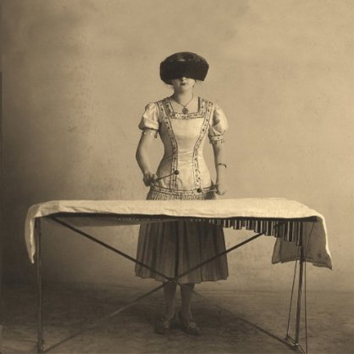

Η ποίηση πάντα προσελκύει περισσότερους σοβαρά συγχυσμένους από αυτούς που της αναλογούν.
Christina Patterson, The Independent
| |
Κατά κύριο λόγο η λογοτεχνική φήμη είναι εύθραυστη και φευγαλέα, και ειδικά η φήμη των ποιητών. Η παρακαταθήκη τους παίζεται σε ένα χρηματιστήριο σπάνιας σκληρότητας και αστάθειας.
Charles McGrath, New York Times
| |
Λατρεύω τις προθεσμίες. Λατρεύω τον σφυριχτό ήχο που κάνουν όταν προσπερνούν.
Ντάγκλας Άνταμς
| |
Τι γίνετε στ’ αλήθεια αδέρφια με τη δίκη για τη δολοφονία του Γρηγορόπουλου ;
Μέσα στη γενική μούγκα από τα μμε για οτιδήποτε θα μπορούσε να διαταράξει την ευτυχία για την νέα κοινωνία που θα φέρει η κρίση....δεν μαθαίνουμε τίποτα απολύτως, εδώ δεν έχουμε δει ούτε έναν ντόπιο να διαμαρτύρεται από τον Έβρο και την Καστοριά που πνίγονται εδώ και εβδομάδες....οι τηλεοράσεις τα έχουν δώσει όλα για όλα μια και το μόνο ρευστό που κυκλοφορεί είναι από τα κρατικά έργα και τις κρατικές διαφημίσεις.
Η δίκη γίνεται με συνεχείς αναβολές και διακοπές σε σημείο που ακόμα και η οικογένεια του Γρηγορόπουλου να μην μπορεί να την παρακολουθήσει αφού εκτός από τα έξοδα και την ταλαιπωρία για να την παρακολουθήσει κάποιος δεν υπάρχουν ούτε καταλύματα για να μείνει κόσμος εκεί (γι’ αυτό και επιλέχτηκε η Άμφισσα). Προχτές είπε μια κοπέλα που παρακολούθησε για κάνα δυό φορές τη δίκη, ότι σκυλεύουν εντελώς τη μνήμη του Γρηγορόπουλου (και δικαστάδες και Κουγαίοι) λέγοντας ότι ήταν μέτριος μαθητής κ.λ.π. Και βέβαια τώρα που η κοινωνική αναταραχή δεν θα εκφραστεί μόνο με την επανάσταση στην καρτοκινητή τηλεφωνία, η αποτελεσματικότητα των σωμάτων ασφαλείας και προστασίας του πολίτη είναι επιβεβλημένη.
Όταν το τελευταίο λαμόγιο κρεμαστεί με τα έντερα του τελευταίου καριόλη, η ανθρωπότητα θα ευτυχήσει.
| |
Η ποίηση δεν είναι η έκφραση της γραμμής του κόμματος. Είναι αυτή η στιγμή τη νύχτα, που βρίσκεσαι ξαπλωμένος στο κρεββάτι, σκεπτόμενος τί στα αλήθεια σκέφτεσαι, μεταμορφώνοντας έτσι τον ιδιωτικό κόσμο σε δημόσιο, αυτό κάνει ο ποιητής.
Allen Ginsberg
| |
Κάθε άντρας έχει ανάγκη από μία γυναίκα για να μην παραπονιέται μόνο για την κυβέρνηση.
Ρόμπερ Ροκά
| |
Ποτέ μην κοροϊδεύετε τους σπασίκλες στο σχολείο, μπορεί κάποτε να δουλεύετε για αυτούς.
| |
Να πιστεύετε αυτούς που ψάχνουν την αλήθεια, και να μην εμπιστεύεστε αυτούς που την βρήκαν.
Αντρέ Ζίντ
| |
Η σκάλα του υπουργείου είναι το σημείο συνάντησης των υπαλλήλων που έρχονται καθυστερημένοι και των υπαλλήλων που φεύγουν νωρίτερα.
Ταλλευράνδος
| |
Οι αναμνήσεις είναι ο μόνος παράδεισος όπου κανείς δεν θα μας διώξει.
Ζαν Πόλ Ρίχτερ
| |
Μπορεί ο έρωτας να μην κάνει τη γη να γυρίζει άλλα σίγουρα κάνει τον γύρο πιο ευχάριστο.
Σόν Κόνερι
| |
Κυριακή 28/2, Σύρος
Δημοτική Πινακοθήκη Κυκλάδων
| |
Link: 
| |
Των εχόντων πάντες άνθρωποι φίλοι.
Όλοι οι άνθρωποι είναι φίλοι των πλουσίων.
Ευριπίδης
| |
Ποτέ μου δεν κάθομαι να σκεφτώ το μέλλον. Έρχεται μόνο του, τόσο γρήγορα.
Άλμπερτ Αϊνστάιν
| |
Όταν φτάσαμε στην είσοδο της αυλής όπου κατοικούσε ο βασιλιάς, ο οδηγός μου και ο διερμηνέας μου έβγαλαν τα σανδάλια τους, κατά το έθιμο, και ο πρώτος πρόφερε δυνατά το όνομα του βασιλιά πολλές φορές μέχρι που απάντησαν από μέσα. Ο βασιλιάς ήταν καθισμένος πάνω σε ένα χαλί περιστοιχισμένος από ακολούθους του. Του εξήγησα τους λόγους που πέρναγα από τη χώρα του, αλλά δεν φάνηκε ικανοποιημένος. Η ιδέα του ταξιδιού μου από απλή περιέργεια του φάνηκε εξωφρενική. Του φαινόταν αδύνατο ένας άνθρωπος στα συγκαλά του να αφήσει το σπίτι του και να κάνει ένα πολύ επικίνδυνο ταξίδι, μόνο και μόνο για να γνωρίσει τον τόπο και τους ανθρώπους του.
Όταν του έδωσα τα δώρα μου ευχαριστήθηκε πολύ, κυρίως με την ομπρέλα, που την ανοιγόκλεισε κάμποσες φορές, πράγμα που προκάλεσε το θαυμασμό τόσο του ίδιου όσο και των ακολούθων του, οι οποίοι για ένα διάστημα δεν μπορούσαν να καταλάβουν τη χρησιμότητα αυτής της μηχανής. Ο βασιλιάς άρχισε να πλέκει το εγκώμιό μου και ιδιαίτερα να επαινεί το μπλε σακάκι μου. Τού είχαν κάνει ιδιαίτερη εντύπωση τα κίτρινα κουμπιά του, και μου ζήτησε να του το χαρίσω, διαβεβαιώνοντάς με ότι θα το φορούσε σε όλες τις εκδηλώσεις και θα έλεγε σε όλους ότι το χρωστούσε στη γενναιοδωρία μου.
Mungo Park (1795)
| |
Μου αρέσουν δύο είδη ανδρών. Οι συμπατριώτες μου και οι ξένοι.
Μέη Γουέστ
| |
Και με τα τόσα βάσανα
πάλι η ζωή γλυκιά είναι
κι όποιος το θάνατο ζητεί
πρέπει τρελός για να είναι.
Δημοτικό τραγούδι
| |
Ο κάθε ένας ακούει μόνο αυτό που καταλαβαίνει.
Γκαίτε
| |
Το της τύχης ρεύμα μεταπίπτει ταχύ.
Η πορεία της τύχης γρήγορα αλλάζει.
Μένανδρος
| |
Ούπω πάσιν άδειν.
Δεν μπορεί να αρέσει κανείς σε όλους.
| |
Ο γενναίος οφείλει να είναι και μεγαλόψυχος.
Κικέρων
| |
Κυρίως τρέφω αδυναμία για τους κάπως διαταραγμένους τύπους, και οι ποιητές ανήκουν σε αυτή την κατηγορία. Οι μεγάλοι φίλοι μου, δεν ήταν οι συγγραφείς αλλά οι αποτυχημένοι.
E.M. Cioran
| |
Ο έρωτας είναι σαν τα μανιτάρια, δεν το ξέρεις εάν ανήκουν στην καλή ή στην κακή κατηγορία. Όταν θα το μάθεις θα είναι αργά.
Τριστάν Μπερνάρ
| |
Η ύπαρξή μας δεν είναι άλλο από το σύνολο μικρών, ασήμαντων πράξεων, τις οποίες, εικοσιτέσσερις ή σαρανταοκτώ ώρες μετά, είμαστε σχεδόν εντελώς ανίκανοι να θυμηθούμε. Αυτό ονομάζουμε ζωή.
Maurice Maeterlingk
| |
Ευτυχισμένος ο άρχων που κάνει τους υπηκόους του όχι να τον φοβούνται, μα να φοβούνται μήπως αυτός πάθει τίποτε κακό.
Όμηρος
| |
Η θάλασσα βάζει όρια στη στεριά και η στεριά στη θάλασσα.
Seamus Heaney
| |
Υπάρχουν μόνο δύο τρόποι για να πεις την πλήρη αλήθεια: ανώνυμα και μεταθανάτια.
Thomas Sowell
| |
Δεν μου αρέσουν καθόλου οι τρύπες χωρίς τυρί.
Zarko Petan
| |
Τι κάνει ένα καθώς πρέπει μέρος σε ένα κορίτσι σαν κι εσένα ;
| |
Είναι θλιβερό το γεγονός ότι ένας ποιητής μπορεί να κερδίσει πολύ περισσότερα χρήματα γράφοντας ή μιλώντας για την τέχνη του, απ’ ότι εξασκώντας την.
W. H. Auden
| |
Ο Ιησούς πέθανε πολύ νωρίς. Αν είχε ζήσει μέχρι την ηλικία μου, θα είχε αποκηρύξει ολόκληρη τη διδασκαλία του.
Νίτσε
| |
Το κάπνισμα είναι σταυραναστάσιμο. Και σταύρωση και ανάσταση.
Κώστας Ζουράρις
| |
Ο λογικός άνθρωπος προσαρμόζεται στον κόσμο. Ο παράλογος επιμένει να αλλάξει τον κόσμο. Άρα η πρόοδος εξαρτάται από τον παράλογο άνθρωπο.
Μπέρναν Σώ
| |
Ποτέ δεν διαβάζω ένα βιβλίο για το οποίο πρέπει να γράψω την κριτική, μπορεί κανείς να επηρεαστεί από αυτό.
Όσκαρ Ουάιλντ
| |

Δεν είμαι το είδος της γυναίκας που νόμιζες και που νόμιζα ότι είμαι.
Jane Carlyle 1800
| |
Ας είμαστε ευγενικές με ορισμένες φιλόδοξες γυναίκες γιατί δεν ξέρουμε τελικά ποιόν μπορεί να παντρευτούν.
Λαίδη Έιλσμπερι
| |
Ένα ποίημα είναι ποίημα όταν δεν το καταλαβαίνει κανείς. Όταν το καταλαβαίνουν όλοι, δεν είναι ποίημα, είναι τσιφτετέλι.
Ντίνος Ηλιόπουλος από ελληνική ταινία
| |
Η εφημερίδα σας ανήγγειλε τον θάνατό μου. Επειδή είστε πάντα καλά ενημερωμένοι, παρακαλώ πολύ σταματήστε τη συνδρομή μου, η οποία μου είναι πλέον άχρηστη.
Ρ. Κίπλινγκ
| |
Πόσο μεγάλο δέος αισθάνομαι όταν ένα μικρό πουλί δέχεται τη φιλία μου.
Έλεν Τόμσον
| |
Τα δείπνα στο σπίτι των Χάντερκόμπ είχαν όλα τα θεατρικά χαρακτηριστικά, το κρασί ήταν φάρσα και τα φαγητά τραγωδία.
Άντονι Πάουελ
| |
Αγαπητέ Γιώργο, είμαι παντρεμένος οκτώ χρόνια. Αγαπάω τη γυναίκα μου πάρα πολύ, είναι όμως νυμφομανής. Τι να κάνω ;
Γιώργος : Σταμάτα να γράφεις γράμματα και άρχισε να ευγνωμονείς την τύχη σου.
| |
Στη βικτοριανή εποχή οι καναπέδες απαγορεύονταν αυστηρά σαν “ερωτικά καθίσματα”, οι μαμές παρέδιδαν τα μωρά τυλιγμένα σε φασκιές, οι γυναίκες πλένονταν με 20 μέτρα βαμβακερό ύφασμα τυλιγμένο ολόγυρά τους. Η τέλεια οικοδέσποινα θα φρόντιζε ώστε τα έργα των ανδρών και των γυναικών συγγραφέων να είναι χωρισμένα με το σωστό τρόπο στα ράφια της βιβλιοθήκης, ενώ η γειτνίασή τους θα έπρεπε να αποφεύγεται συστηματικά εκτός και εάν επρόκειτο για παντρεμένα ζευγάρια. Ένας μεθοδιστής ιερέας στο Λονδίνο έδενε τα πόδια του κόκορα ώστε να μην μπαίνει σε πειρασμό το κοτέτσι κατά τη διάρκεια της χριστιανικής αργίας της Κυριακής.
Graham Jones
| |
Το μυστικό του να κερδίζεις είναι να αγοράζεις όταν το αίμα κυλάει στους δρόμους.
Βαρώνος Ρότσιλντ
| |

Με βαριά καρδιά πήρε η κυβέρνηση τα "αναγκαία μέτρα".
Δε πάνε να γαμηθούνε, να ασπρίσουνε λίγο !!!!!
| |
|
35 readers online
|